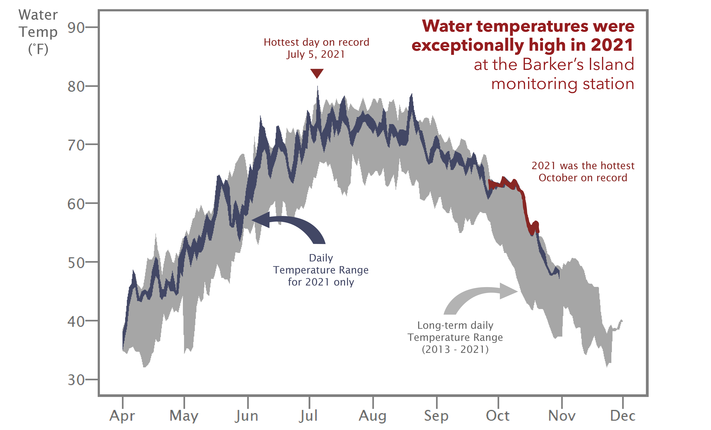
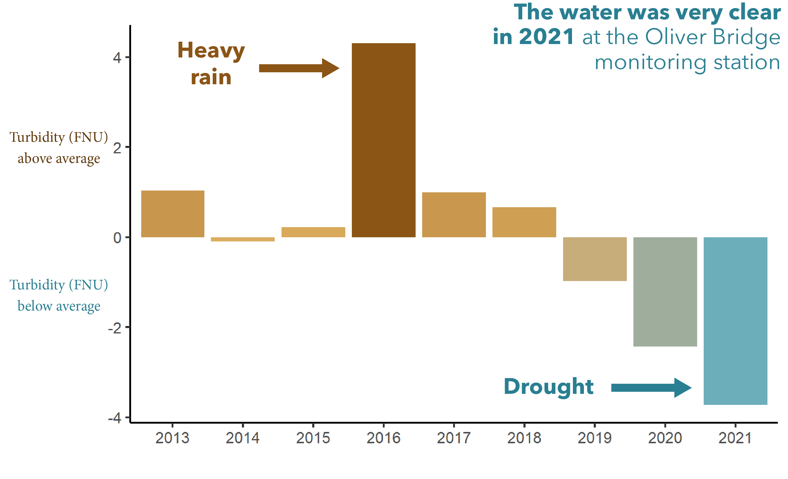

On the St. Louis River estuary, 2021 was a great year to be a frequent beachgoer. Continuous high temperatures and rainless drought conditions were the major headline of the ice-free months from April to October. Wouldn’t it be helpful if we had a long-term water quality dataset so we could explore how water is impacted by temperature and drought? Wait a minute, we do! The Lake Superior Reserve’s System-Wide Monitoring Program, or SWMP (“swamp”) as it is affectionately known, has been collecting water quality data at consistent locations and intervals in the estuary since 2012. A long-term estuary water quality dataset is a useful thing to have around. This dataset helps us track trends and note anything out of the ordinary. In this 2021 edition, we will point out some of the exceptional water stories from an exceptional year.
In Hot Water
Did you find the water in your favorite St. Louis River swimming hole particularly inviting during the summer of 2021? In a year with warm air temperatures and very little rainfall to inject cooler rainwater into the river, we observed that water temperatures were exceptionally high at the Barker’s Island monitoring station. The water temperature hit a new record high of 80 degrees on July 5th. The monitoring equipment at this station records the water temperature range every day from April to November. For the majority of the 2021 season, those daily temperature ranges hugged the top of the full range of temperatures the Reserve has seen in a decade. As summer transitioned to fall, water temperatures stayed unusally warm for an extended amount of time. It was definitively the hottest October on record for water temperature on Barker’s Island, at more than 5˚F above than the average of all other Octobers (2013-2020).

To sum up all of the water temperature extremes, 2021 had the warmest ever water day, the warmest ever end to the season, and had consistent above-average warm water temperatures throughout most of the season.
In addition to making swimming a less frigid activity, unusually high water temperatures speed up the overall metabolism of the estuary. Organisms that reside in the water tend to breathe, eat, and move more as temperature goes up. The relatively warm waters of 2021 created a good condition for increased productivity in the estuary.

After a substantial rain, the waters in the St. Louis River estuary turn brown and cloudy with the swirling influx of clay soil and organic matter that washes off the land. Cloudy water is also called turbid water. Turbidity can block sunlight from reaching aquatic plants and other photosynthetic organisms. Heavy rain years (like the one in 2016) often produce more turbid water in the estuary.
As you may have noticed from all the withering grass, rain events in 2021 were scarce. Drought conditions led to very clear water at the Oliver Bridge monitoring station, which is upriver in the main channel of the estuary. In fact, 2021 was the clearest the water has ever been since 2013. With ample sunny days, plants and photosynthetic organisms, like algae and cyanobacteria, grow without much limitation from light-blocking turbidity.
Hot, Dry, and a Bloom, Oh My
When you have unusually warm and clear water fostering high productivity in the St. Louis River estuary, cyanobacteria (or blue-green algae) can take advantage of two of their preferred conditions - warm water and plentiful sun - to grow and become numerous. When the growth of cyanobacteria becomes excessive, it can be labeled a bloom. This was observed on the morning of September 10th in the waters just off Barker’s Island inner beach. The bright, opaque green scum on top of the water was tested and later found to contain three species of cyanobacteria and the presence of two toxins, the first detection of cyanotoxins in a Lake Superior-connected waterway.

This was a very visible bloom in a high traffic area and was fortunately detected by Reserve staff. As questions arise about the future of blooms in the estuary, the Reserve continues to improve bloom monitoring and detection efforts. Our Reserve has joined with 12 other National Estuarine Research Reserves across the country to evaluate algae sensors that would continuously track algal abundance, in hopes of providing real-time information on potential blooms. Further testing will tell if this method will help us better find and study cyanobacteria in the estuary. Further monitoring and research will help us determine if the Barker’s Island bloom was related to the unusual water quality in 2021, or if it is a part of a longer term trend towards more productive waters.
Keep up with the SWMP
Access all the SWMP water quality data by visiting NOAA’s Centralized Data Management Office
Contact the SWMP Coordinator
Hannah Ramage
hannah.ramage@wisc.edu
phone: 715-399-4088